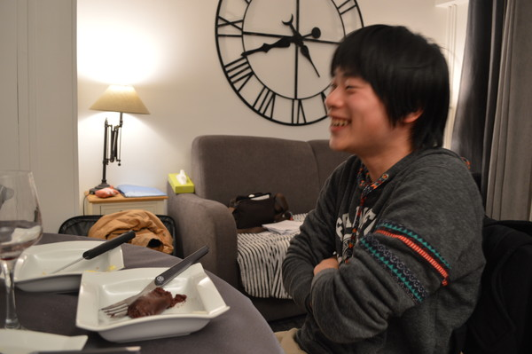

Bonjour!
みなさんこんにちは！東田です！
突然ですがフランスに来ています！！
フランスです！！！！！
かつてのご報告から早数ヶ月…すっかり忘れた頃でしたが初海外です．
お相手は
チームリーダーの望月くんと，
ソフトウェアエンジニアな浅野くんです．
初国際線からの初機内食にwktkしてたり…
（↓ ポテトサラダ＋マッシュポテトWithパン～クラッカーを添えて～．すごい炭水化物！）
お隣の中国の方やフランスの方とお話してたり…
（荷物を上まで何度も上げてもらいました．本当に有難うございます！名前をお聞きすればよかった…そっときなこもちチロルを手渡すのが精一杯でした）
バスに一緒に乗りましょうとマダムに誘ってもらったり…
（「Montparnasseで降りるの？降車場は違うけれど私もおんなじバスよ！」と教えていただきました！）
宿へ到着するまでで既に沢山の方々にめるしーぼくー！！！とお世話になりっぱなしでした．有り難いことですね…！
宿へ到着しても鍵が上手く開けられなくてもだもだしてたんですけどね！（望月くんが）
お昼はチェックインまでの時間を潰しがてら，近所の公園のベンチに座ってのんびり日向ぼっこをしながらブーランジェリー（Boulangerie，いわゆるパン屋さん）で買ってきたサンドイッチを食べていました．
公園．フランスは日が陰ると寒いですが，日が出ると一気に暖かいです．
日本より若干ですが日差しが強く感じます．
私はピタパン（かな？）のサンドイッチ．一つだいたい４ユーロくらい．
浅野「久しぶりに暇な時間を楽しんでる気がする」
望月「わかる」
さて，今回お泊りする宿はいつものようなホテルとは異なります．
Airbnb．所謂民泊と同じようなシステムだと考えていただけると良いかと思います．
清掃員さんが入ったり，バイキング朝食だったりはしませんが，代わりに（？）
実際に現地の住宅街で，彼らと同じように食材を買って調理したり，洗濯をしたり…という
これはこれで貴重な体験ができるシステム．しかもお値段も安めなので，毎度の食事を
頑張って自炊すれば相当安上がりになりそうです．
大家さんとお話するためのフランス語を勉強中のリーダー望月．
私達が泊まったお部屋はこんな感じ．大きな時計型の壁飾りが特徴的なお部屋．
窓からはエッフェル塔も見えます．
シャワールームが鏡張りだったり，
些細なことから大きなことまで全く暮らしが違うのが面白いです．
チェックインが終わってから，スュペルマルシェ（Supermarché，＝Supermarket）で赤青リンゴを買って食べ比べしたり，飲み物や夕食を買ったり．
そして望月くんと浅野くんが迎えに行き，REXさんと合流して待望の晩ご飯！．
夜ご飯はパンと炒り卵，チーズにサラダ，そして謎ソーセージ．
買ったのは私（と浅野くん）です！ごめんね！！
Traditionalと書いてあったのでこれでいいかな？と買った所，割とこう…レバーみのある感じのお肉でした．これはこれでという味ですが，好き嫌いが分かれそう．

味の摩訶不思議さに笑いすぎて対談中みたいなことになってしまっている二人．
おまけ
パンを一人で買ってこれて得意気なリーダー．
「ちゃんと一人で買い物できたしパン屋の店員さんがめっちゃ可愛かった！（ﾄﾞﾔｧ」